Sometimes, we may want to estimate relationships between latent variables and we are interested in the effect of different measurement models on the relationship of interest. Because specifically customized model-functions can be passed to run_specs() many different model types (including structural equation models, multilevel models…) can be estimated. This vignette exemplifies how to intergrate latent measurement models and estimate structural equations models (SEM).
For this example, we will us the HolzingerSwineford1939 data set that is included in the lavaan-package. We quickly dummy-code the sex variable as we want to include it as a control.
library(specr) library(purrr) library(dplyr) library(ggplot2) library(lavaan) # Load data and recode d <- HolzingerSwineford1939 %>% mutate(sex = factor(sex)) %>% as_tibble # Check data head(d) #> # A tibble: 6 x 15 #> id sex ageyr agemo school grade x1 x2 x3 x4 x5 x6 x7 #> <int> <fct> <int> <int> <fct> <int> <dbl> <dbl> <dbl> <dbl> <dbl> <dbl> <dbl> #> 1 1 1 13 1 Paste… 7 3.33 7.75 0.375 2.33 5.75 1.29 3.39 #> 2 2 2 13 7 Paste… 7 5.33 5.25 2.12 1.67 3 1.29 3.78 #> 3 3 2 13 1 Paste… 7 4.5 5.25 1.88 1 1.75 0.429 3.26 #> 4 4 1 13 2 Paste… 7 5.33 7.75 3 2.67 4.5 2.43 3 #> 5 5 2 12 2 Paste… 7 4.83 4.75 0.875 2.67 4 2.57 3.70 #> 6 6 2 14 1 Paste… 7 5.33 5 2.25 1 3 0.857 4.35 #> # … with 2 more variables: x8 <dbl>, x9 <dbl>
Let’s quickly run a simple structural equation model with lavaan. Note that there are seperate regression formulas for the measurement models and the actual regression models in the string that represents the model. The regression formulas follows a similar pattern as formulas in linear models (e.g., using lm() or glm()) or multilevel models (e.g., using lme4::lmer()). This regression formula will automatically be built by the function run_specs(). The formulas denoting the measurement model (in this case only one), however, we need to actively paste into the formula string.
# Model syntax model <- " # measures visual =~ x1 + x2 + x3 # regressions visual ~ ageyr + grade " sem(model, d) #> lavaan 0.6-7 ended normally after 24 iterations #> #> Estimator ML #> Optimization method NLMINB #> Number of free parameters 8 #> #> Used Total #> Number of observations 300 301 #> #> Model Test User Model: #> #> Test statistic 6.600 #> Degrees of freedom 4 #> P-value (Chi-square) 0.159
1. Defining the customized sem model function
In a first step, we thus need to create a specific function that defines the latent measurement models for the latent measures specified as x and y in run_specs() and incoporate them into a formula that follows the lavaan-syntax. The function needs to have two arguments: a) formula and b) data. The exact function now depends on the purpose and goals of the particular question.
In this case, we want to include three different latent measurement models for dependent variables. First, we have to define a a named list with these measurement models. This is important as the function makes use of the “names”. In a second step, we need to exclude the “+ 1” placeholder the specr automatically adds to each formula if no covariates are included (in contrast to lm() or lme4::lmer(), lavaan::sem() does not support such a placeholder). Third, we need to make sure that only those measurement models are integrated which are actually used in the regression formula (it does not matter whether these are independent or control variables). Fourth, we need to paste the remaining measurment models into the formula. Finally, we run the structural equation model (here, additional arguments such as estimator could be used).
sem_custom <- function(formula, data) { require(lavaan) # 1) Define latent variables as a named list latent <- list(visual = "visual =~ x1 + x2 + x3", textual = "textual =~ x4 + x5 + x6", speed = "speed =~ x7 + x8 + x9") # 2) Remove placeholder for no covariates (lavaan does not like "+ 1") formula <- str_remove_all(formula, "\\+ 1") # 3) Check which of the additional measurement models are actually used in the formula valid <- purrr::keep(names(latent), ~ stringr::str_detect(formula, .x)) # 4) Include measurement models in the formula using lavaan syntax formula <- paste(formula, "\n", paste(latent[valid], collapse = " \n ")) # 5) Run SEM with sem function sem(formula, data) } # In short: sem_custom <- function(formula, data) { require(lavaan) latent <- list(visual = "visual =~ x1 + x2 + x3", textual = "textual =~ x4 + x5 + x6", speed = "speed =~ x7 + x8 + x9") formula <- stringr::str_remove_all(formula, "\\+ 1") valid <- purrr::keep(names(latent), ~ stringr::str_detect(formula, .x)) formula <- paste(formula, "\n", paste(latent[valid], collapse = " \n ")) sem(formula, data) }
2. Run the specification curve analysis with additional parameters
Now we set up run_specs() like we are used to. We only include the new function as model parameter and use the latent variables (see named list in the custom function) as depended variables. We further keep the results (keep.results = T) for the time being. Warning messages may appear if models do not converge or have other issues.
(results <- run_specs(df = d, y = c("textual", "visual", "speed"), x = c("ageyr"), model = c("sem_custom"), controls = c("grade"), subsets = list(sex = unique(d$sex), school = unique(d$school)), keep.results = T)) #> Warning: Problem with `mutate()` input `res`. #> ℹ lavaan WARNING: some estimated ov variances are negative #> ℹ Input `res` is `map2(.data$model, formula, ~do.call(.x, list(data = df, formula = .y)))`. #> Warning in lav_object_post_check(object): lavaan WARNING: some estimated ov #> variances are negative #> # A tibble: 54 x 33 #> x y model controls res op estimate std.error statistic p.value #> <chr> <chr> <chr> <chr> <lis> <chr> <dbl> <dbl> <dbl> <dbl> #> 1 ageyr text… sem_… grade <lav… ~ -0.360 0.0763 -4.72 2.32e-6 #> 2 ageyr visu… sem_… grade <lav… ~ -0.0581 0.0583 -0.997 3.19e-1 #> 3 ageyr speed sem_… grade <lav… ~ 0.0516 0.0629 0.821 4.12e-1 #> 4 ageyr text… sem_… no cova… <lav… ~ -0.183 0.0710 -2.57 1.01e-2 #> 5 ageyr visu… sem_… no cova… <lav… ~ 0.00828 0.0412 0.201 8.41e-1 #> 6 ageyr speed sem_… no cova… <lav… ~ 0.142 0.0581 2.44 1.48e-2 #> 7 ageyr text… sem_… grade <lav… ~ -0.552 0.107 -5.15 2.54e-7 #> 8 ageyr visu… sem_… grade <lav… ~ -0.447 0.116 -3.86 1.12e-4 #> 9 ageyr speed sem_… grade <lav… ~ 0.00661 0.0796 0.0830 9.34e-1 #> 10 ageyr text… sem_… no cova… <lav… ~ -0.252 0.0918 -2.75 6.02e-3 #> # … with 44 more rows, and 23 more variables: conf.low <dbl>, conf.high <dbl>, #> # std.lv <dbl>, std.all <dbl>, std.nox <dbl>, fit_agfi <dbl>, fit_AIC <dbl>, #> # fit_BIC <dbl>, fit_cfi <dbl>, fit_chisq <dbl>, fit_npar <dbl>, #> # fit_rmsea <dbl>, fit_rmsea.conf.high <dbl>, fit_srmr <dbl>, fit_tli <dbl>, #> # fit_converged <lgl>, fit_estimator <chr>, fit_ngroups <int>, #> # fit_missing_method <chr>, fit_nobs <int>, fit_norig <int>, #> # fit_nexcluded <int>, subsets <chr>
We know can use the usual functions to plot or summarize the results.
# Summary across the dependent variables summarise_specs(results, y) #> # A tibble: 3 x 8 #> y median mad min max q25 q75 obs #> <chr> <dbl> <dbl> <dbl> <dbl> <dbl> <dbl> <dbl> #> 1 speed 0.0739 0.100 -0.106 0.249 0.0261 0.152 144. #> 2 textual -0.277 0.124 -0.558 -0.0180 -0.361 -0.201 144. #> 3 visual -0.122 0.110 -0.504 0.00828 -0.170 -0.0415 144. # Plot plot_specs(results)

3. More specific analyses
Bear in mind that run_specs() has created entire lavaan objects. As we have kept these objects (by keep.results = T), we can retrieve them by looking at the column “res” and e.g., produce the standard summary of lavaan.
# First model summarized results$res[[1]] %>% summary(std = T, fit = T) #> lavaan 0.6-7 ended normally after 19 iterations #> #> Estimator ML #> Optimization method NLMINB #> Number of free parameters 8 #> #> Used Total #> Number of observations 145 146 #> #> Model Test User Model: #> #> Test statistic 2.389 #> Degrees of freedom 4 #> P-value (Chi-square) 0.665 #> #> Model Test Baseline Model: #> #> Test statistic 254.992 #> Degrees of freedom 9 #> P-value 0.000 #> #> User Model versus Baseline Model: #> #> Comparative Fit Index (CFI) 1.000 #> Tucker-Lewis Index (TLI) 1.015 #> #> Loglikelihood and Information Criteria: #> #> Loglikelihood user model (H0) -546.905 #> Loglikelihood unrestricted model (H1) -545.711 #> #> Akaike (AIC) 1109.811 #> Bayesian (BIC) 1133.625 #> Sample-size adjusted Bayesian (BIC) 1108.310 #> #> Root Mean Square Error of Approximation: #> #> RMSEA 0.000 #> 90 Percent confidence interval - lower 0.000 #> 90 Percent confidence interval - upper 0.099 #> P-value RMSEA <= 0.05 0.791 #> #> Standardized Root Mean Square Residual: #> #> SRMR 0.013 #> #> Parameter Estimates: #> #> Standard errors Standard #> Information Expected #> Information saturated (h1) model Structured #> #> Latent Variables: #> Estimate Std.Err z-value P(>|z|) Std.lv Std.all #> textual =~ #> x4 1.000 0.936 0.841 #> x5 1.155 0.101 11.384 0.000 1.081 0.863 #> x6 0.905 0.085 10.682 0.000 0.847 0.802 #> #> Regressions: #> Estimate Std.Err z-value P(>|z|) Std.lv Std.all #> textual ~ #> ageyr -0.360 0.076 -4.723 0.000 -0.385 -0.437 #> grade 0.866 0.174 4.981 0.000 0.925 0.462 #> #> Variances: #> Estimate Std.Err z-value P(>|z|) Std.lv Std.all #> .x4 0.362 0.067 5.427 0.000 0.362 0.293 #> .x5 0.400 0.083 4.829 0.000 0.400 0.255 #> .x6 0.398 0.063 6.277 0.000 0.398 0.357 #> .textual 0.684 0.118 5.775 0.000 0.781 0.781
We can further map typical lavaan-functions onto all models.
results %>% pull(res) %>% map(parameterEstimates) %>% head(3) # first three models #> [[1]] #> lhs op rhs est se z pvalue ci.lower ci.upper #> 1 textual ~ ageyr -0.360 0.076 -4.723 0 -0.510 -0.211 #> 2 textual ~ grade 0.866 0.174 4.981 0 0.525 1.206 #> 3 textual =~ x4 1.000 0.000 NA NA 1.000 1.000 #> 4 textual =~ x5 1.155 0.101 11.384 0 0.956 1.354 #> 5 textual =~ x6 0.905 0.085 10.682 0 0.739 1.070 #> 6 x4 ~~ x4 0.362 0.067 5.427 0 0.232 0.493 #> 7 x5 ~~ x5 0.400 0.083 4.829 0 0.238 0.562 #> 8 x6 ~~ x6 0.398 0.063 6.277 0 0.274 0.522 #> 9 textual ~~ textual 0.684 0.118 5.775 0 0.452 0.916 #> 10 ageyr ~~ ageyr 1.288 0.000 NA NA 1.288 1.288 #> 11 ageyr ~~ grade 0.260 0.000 NA NA 0.260 0.260 #> 12 grade ~~ grade 0.250 0.000 NA NA 0.250 0.250 #> #> [[2]] #> lhs op rhs est se z pvalue ci.lower ci.upper #> 1 visual ~ ageyr -0.058 0.058 -0.997 0.319 -0.172 0.056 #> 2 visual ~ grade 0.315 0.152 2.069 0.039 0.017 0.612 #> 3 visual =~ x1 1.000 0.000 NA NA 1.000 1.000 #> 4 visual =~ x2 0.817 0.236 3.462 0.001 0.354 1.279 #> 5 visual =~ x3 1.625 0.527 3.082 0.002 0.591 2.658 #> 6 x1 ~~ x1 0.893 0.151 5.926 0.000 0.598 1.189 #> 7 x2 ~~ x2 1.351 0.176 7.673 0.000 1.006 1.697 #> 8 x3 ~~ x3 0.448 0.287 1.561 0.119 -0.114 1.010 #> 9 visual ~~ visual 0.333 0.139 2.401 0.016 0.061 0.605 #> 10 ageyr ~~ ageyr 1.288 0.000 NA NA 1.288 1.288 #> 11 ageyr ~~ grade 0.260 0.000 NA NA 0.260 0.260 #> 12 grade ~~ grade 0.250 0.000 NA NA 0.250 0.250 #> #> [[3]] #> lhs op rhs est se z pvalue ci.lower ci.upper #> 1 speed ~ ageyr 0.052 0.063 0.821 0.412 -0.072 0.175 #> 2 speed ~ grade 0.488 0.153 3.188 0.001 0.188 0.788 #> 3 speed =~ x7 1.000 0.000 NA NA 1.000 1.000 #> 4 speed =~ x8 1.268 0.227 5.594 0.000 0.824 1.712 #> 5 speed =~ x9 0.634 0.129 4.913 0.000 0.381 0.887 #> 6 x7 ~~ x7 0.519 0.100 5.213 0.000 0.324 0.715 #> 7 x8 ~~ x8 0.425 0.134 3.159 0.002 0.161 0.688 #> 8 x9 ~~ x9 0.609 0.080 7.602 0.000 0.452 0.766 #> 9 speed ~~ speed 0.420 0.110 3.816 0.000 0.204 0.636 #> 10 ageyr ~~ ageyr 1.288 0.000 NA NA 1.288 1.288 #> 11 ageyr ~~ grade 0.260 0.000 NA NA 0.260 0.260 #> 12 grade ~~ grade 0.250 0.000 NA NA 0.250 0.250
Because the broom::tidy() functions also extracts standardized coefficients, we can plot them on top of the unstandarized coefficients with a little bit of extra code.
plot_specs(plot_a = plot_curve(results) + geom_point(aes(y = std.all, alpha = .1, size = 1.25)) + geom_hline(yintercept = 0, linetype = "dashed"), plot_b = plot_choices(results, choices = c("y", "controls", "subsets")))

Some fit indices are already included in the result data frame by default. But we can also extract more specific fit indices (e.g., chi-squared value, srmr…) with a few code lines and plot the distribution across all specifications.
# Looking at included fit indices results %>% dplyr::select(x, y, model, controls, subsets, fit_cfi, fit_tli, fit_rmsea) #> # A tibble: 54 x 8 #> x y model controls subsets fit_cfi fit_tli fit_rmsea #> <chr> <chr> <chr> <chr> <chr> <dbl> <dbl> <dbl> #> 1 ageyr textual sem_custom grade sex = 1 1 1.01 0 #> 2 ageyr visual sem_custom grade sex = 1 1 1.07 0 #> 3 ageyr speed sem_custom grade sex = 1 1 1.02 0 #> 4 ageyr textual sem_custom no covariates sex = 1 1 1.03 0 #> 5 ageyr visual sem_custom no covariates sex = 1 1 1.08 0 #> 6 ageyr speed sem_custom no covariates sex = 1 1 1.03 0 #> 7 ageyr textual sem_custom grade sex = 2 0.994 0.986 0.0547 #> 8 ageyr visual sem_custom grade sex = 2 0.979 0.954 0.0534 #> 9 ageyr speed sem_custom grade sex = 2 0.857 0.677 0.167 #> 10 ageyr textual sem_custom no covariates sex = 2 0.998 0.995 0.0375 #> # … with 44 more rows # Extract chisq from lavaan objects res_chisq <- results %>% mutate(chisq = map(res, function(x) fitmeasures(x)[c("chisq")]), chisq = map_dbl(chisq, 1)) # Create curve plot p1 <- plot_curve(res_chisq, chisq, ci = F) + geom_line(aes(x = specifications, y = chisq, color = "black")) + geom_point(size = 2) + # increasing size of points labs(y = "Chi-Squared") # Create choice panel with chisq arrangement p2 <- plot_choices(res_chisq, chisq, choices = c("y", "controls", "subsets")) # Bind together plot_specs(plot_a = p1, plot_b = p2)

We can see that one model fits the data best. With a bit of filtering, we can than investigate this model more specifically.
results %>% filter(y == "textual" & controls == "no covariates" & subsets == "sex = 1") %>% pull(res) %>% map(summary) #> lavaan 0.6-7 ended normally after 17 iterations #> #> Estimator ML #> Optimization method NLMINB #> Number of free parameters 7 #> #> Number of observations 146 #> #> Model Test User Model: #> #> Test statistic 0.077 #> Degrees of freedom 2 #> P-value (Chi-square) 0.962 #> #> Parameter Estimates: #> #> Standard errors Standard #> Information Expected #> Information saturated (h1) model Structured #> #> Latent Variables: #> Estimate Std.Err z-value P(>|z|) #> textual =~ #> x4 1.000 #> x5 1.190 0.106 11.195 0.000 #> x6 0.922 0.087 10.596 0.000 #> #> Regressions: #> Estimate Std.Err z-value P(>|z|) #> textual ~ #> ageyr -0.183 0.071 -2.571 0.010 #> #> Variances: #> Estimate Std.Err z-value P(>|z|) #> .x4 0.385 0.069 5.610 0.000 #> .x5 0.371 0.085 4.366 0.000 #> .x6 0.392 0.064 6.163 0.000 #> .textual 0.806 0.140 5.767 0.000 #> [[1]] #> [[1]]$PE #> lhs op rhs exo est se z pvalue #> 1 textual ~ ageyr 0 -0.1825899 0.07102701 -2.570711 1.014901e-02 #> 2 textual =~ x4 0 1.0000000 0.00000000 NA NA #> 3 textual =~ x5 0 1.1897890 0.10627977 11.194877 0.000000e+00 #> 4 textual =~ x6 0 0.9217514 0.08698951 10.596122 0.000000e+00 #> 5 x4 ~~ x4 0 0.3849639 0.06861726 5.610307 2.019685e-08 #> 6 x5 ~~ x5 0 0.3710725 0.08498783 4.366184 1.264358e-05 #> 7 x6 ~~ x6 0 0.3921470 0.06362995 6.162930 7.141105e-10 #> 8 textual ~~ textual 0 0.8061304 0.13977804 5.767218 8.059089e-09 #> 9 ageyr ~~ ageyr 1 1.2788985 0.00000000 NA NA